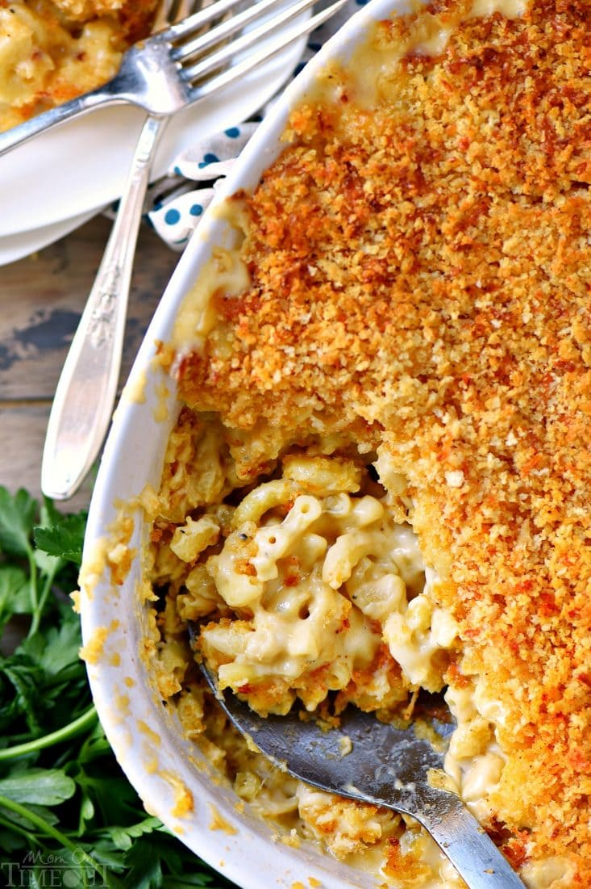

Mac and Cheese

Description: This recipe is of a creamy homemade mac and cheese that is
bound to have your mouths watering.
Ingredients
- elbow macaroni
- olive oil
- flour
- milk
- cheese
Steps
- 1. preheat oven to 350 degrees
- 2. cook pasta 1 min
- 3. melt butter
- 4. whisk flour in
- 5. add cheese
- 6. add macaroni